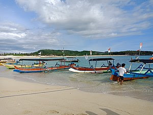

SEJARAH

Sebuah pulau di kepulauan kecil atau Nusa Tenggara yang
terpisah oleh selat lombok dari bali disebelah barat dan selat
Alas di sebelah timur dari sumbawa.
Pulau ini kurang lebih berbentuk bulat semacam"ekor" disisi
barat daya yang panjang nya kurang lebih 70km. luas pulau ini
mencapai 5.435km menempatkannya pada peringkat ke 108 dari
daftar pulau berdasarkan luasnya di dunia. Kota utama di pulau
ini adalah Mataram. Lombok termasuk Nusa Tenggara Barat dan
pulau ini sendiri tendiri dibagi menjadi 4 kabupaten dan 1
kota. Kota Mataram kabupaten Lombok Barat kabupaten Lombok
Tengah kabupaten Lombok timur kabupaten Lombok Utara Tofografi
pulau ini didominasi oleh gunung berpi rinjani yang
ketinggiannya mencapai 3.726 meter diatas permukaan laut dan
menjadikannya ketiga tertinggi di indonesia. Pada tahun 1997
kawasan danau segara Anak ditengahnya dinyatakan dilindungi
oleh pemerintah. Daerah selatan pulau ini sebagian besar
terdiri atas tanah yang subur yang dimanfaatkan untuk
pertanian , komoditad yang biasa ditanam di daerah ini antara
lain jagung, padi, kopi, tembakau,dan kapas.